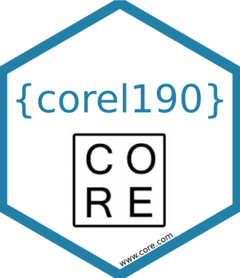

Function reference
-
font_twfont_tw_light - Titillium Web font name R variable aliases
-
aca - Albo degli Arbitri della Camera Arbitrale
-
check_index() - Check the "index" in xml tree
-
generate_empty_dati_tibble() - Generate defaulte dataframe structure whn something fails during pipeline
-
import_titillium_web() - Import Titillium Web font for use in charts
-
parse_xml_dati() - parse_xml_dati
-
parse_xml_index() - parse_xml_index
-
possibly2() - possibly2
-
rcpt - Elenco Responsabili Prevenzione Corruzione e Trasparenza
-
registro_comunicazioni - Registro comunicazioni Art.1 comma 32 L.190/2012
-
serv_fatt - servizi-fatturazione-elettronica
-
theme_anac() - A precise & pristine ggplot2 theme with opinionated defaults and an emphasis on typoghraphy
-
url_exists() - Check if url exists
-
validate_cf()validate_sceltaContraente() - validate_cf